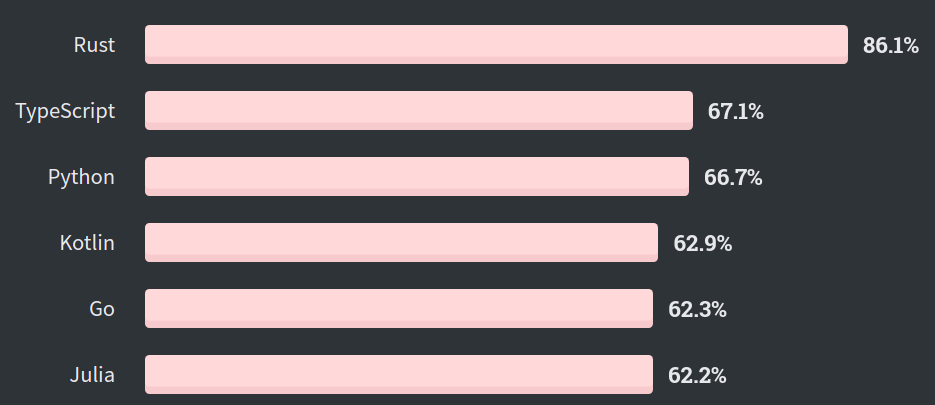
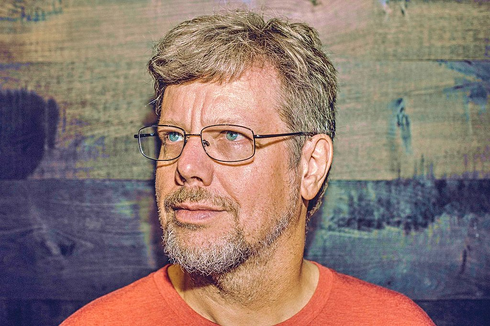

Home Lesson-1.1
Lesson-0
Lesson-0Why learn Python?LessonsOrganizationHow to read these lessons?Python VersionSetting up ReplitHistoryExplore
Why learn Python?
The strongest reason is utility. Python powers a number of applications and is used by companies like Google, Netflix, Dropbox, Quora. A closely related reason is popularity. If a language is popular in the developer community, then there must be something good about it. In a recent survey conducted by the company StackOverflow, Python was rated as the third most loved language.

Around 66% of the 65,000 developers who responded to the survey are currently developing with Python and have expressed interest in continuing to develop with it. Another strong reason to learn Python is that it lets us create beautiful things such as this animation:
Thanks to Manim Community for the source code. The code that was used to render this animation can be found here.
Being able to create something like this is the end goal of this course. Musicians create music; musical instruments are their tools. Painters create paintings; the brush and the canvas are their tools. Coders create software; programming languages are their tools. Python is one of the most versatile and accessible languages. We will start from the basics and systematically cover the important aspects of the language.
Lessons
Organization
This web resource is organized as a sequence of lessons. Lessons will be numbered as <chapter>.<lesson>. Each chapter will have about four lessons. These lessons are best read in the sequence in which they appear, starting from chapter-1 and going all the way up to chapter-12. If you are already familiar with Python, then have a look at the Table of Contents in the home page and jump into the lesson that seems least familiar.
Each chapter introduces one important programming concept in Python. This will be that chapter's title. This doesn't mean that all the lessons in the chapter will focus on only that particular concept. For example, chapter-2 introduces the idea of conditionals, but built-in functions and Python's standard libraries also feature in the same week.
The outline of the book is as follows:
- Chapter-1: Introduction to Python
- Chapter-2: Conditionals
- Chapter-3: Loops
- Chapter-4: Functions
- Chapter-5: Lists and Tuples
- Chapter-6: Sets and dictionaries
- Chapter-7: File handling
- Chapter-8: Object oriented Programming
How to read these lessons?
- Do not trust any piece of code blindly.
- Execute the code and observe the output.
- Think about the output.
- Verify if the explanation given in text matches your observations.
Programming courses are among the few courses where the learner has an upper hand over instructors. No one can trick you. Code does not lie. All that is demanded of you is to make an effort to execute every snippet of code that you see in these lessons.
Python Version
We will be using Python-3.8 or higher throughout these lessons. If some of you are already familiar with Python and are used to Python-2, it is strongly recommended that you shift to Python-3. This is not an arbitrary choice as Python-2 has reached the end of its life.
Setting up Replit
Replit is an online environment where we can write code. It is an ideal place to learn programming and we will be using it extensively in this course. Head to http://www.replit.com/ and sign up using your Online Degree account. Replit provides an excellent tutorial to get you started.
History
Python first appeared on the programming landscape 30 years ago, in February 1991. It was created by a Dutch programmer, Guido van Rossum. He served as the “benevolent dictator for life” of Python’s development until 2018, when he stepped down from the post.

Image-Source: Wikipedia
{kind=link}
A popular question that gets asked often is how the language got its name. This is the answer from the official Python documentation:
When he began implementing Python, Guido van Rossum was also reading the published scripts from “Monty Python’s Flying Circus”, a BBC comedy series from the 1970s. Van Rossum thought he needed a name that was short, unique, and slightly mysterious, so he decided to call the language Python.
Python is 30 years old. Programmers who boarded the Python-bus 30 years back lovingly talk of it as though it were a friend. This is not an exaggeration! This is a language that has been built by people like you and me, and is being used by thousands of people around the globe. Let us jump in with an open mind and see what it has to offer!
Explore
- Check out the website of the Python Software Foundation and get to know more about the organization behind Python.
- Have a look at this interesting interview of Guido Van Rossum. This is a blog maintained by Dropbox. Another trivia: Guido worked at Dropbox for six and a half years.
- Try to watch documentaries and interviews on the web where Guido talks about how Python came into existence. It is always good to know about some non-technical aspects of the language, such as its history and something about the people who were behind its development. It gives a humanistic flavor to technology. We often forget that a lot of software is written by humans, for humans.
- In the next few weeks to come, StackOverflow might become the most visited website by most of you. Some of you might be familiar with it, but for the others, StackOverflow is a question-answer forum for programming related questions. It is extremely popular not just among beginners but even experienced developers. Do check it out, but use it wisely. Refrain from using it to get answers to assignment questions; you won't learn anything that way.